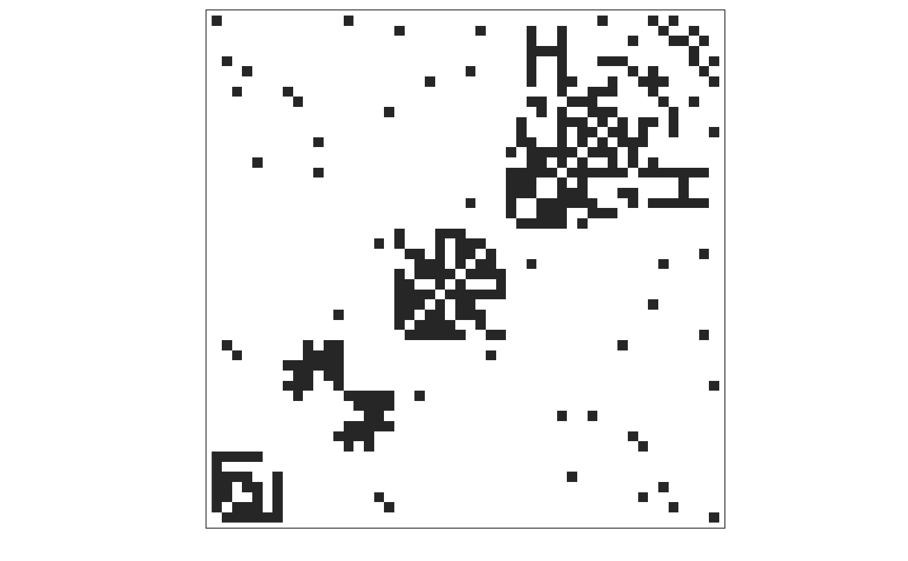

Randomly generate a wide range of interaction networks
netgen(net_size = 50, ave_module_size = 10, min_module_size = 6, min_submod_size = 1, net_type = c("mixed", "random", "scalefree", "nested", "bi-partite nested", "bi-partite random", "tri-trophic bipartite nested-random", "tri-trophic bipartite nested-bipartite nested", "bn", "br", "tt-bn-r", "tt-bn-bn"), ave_degree = 5, rewire_prob_global = 0.2, rewire_prob_local = 0, mixing_probs = c(0.2, 0.2, 0.2, 0.2, 0.2, 0, 0), verbose = FALSE)
| net_size | network size (number of nodes) |
|---|---|
| ave_module_size | average module size |
| min_module_size | cutoff for the minimum modules size |
| min_submod_size | cutoff for submodules, used only for bipartite and tripartite networks |
| net_type | network type, see details |
| ave_degree | average degree of connection |
| rewire_prob_global | probability any given edge should be rewired |
| rewire_prob_local | probability that edges within a module should be rewire locally (within the module) |
| mixing_probs | module probabilities for first 7 types, used for constructing mixed networks |
| verbose | logical, default TRUE. Should a message report summary statistics? |
an igraph object
network type is one of
mixed
random
scalefree
nested
bi-partite nested (or short-hand "bn")
bi-partite random (or short-hand "br")
tri-trophic bipartite nested-random. (Can use short-hand "ttbnr")
tri-trophic bipartite nested-bipartite nested (Can use short-hand "ttbnbn")
Valid Parameter Ranges:
net_size >= ave_module_size. If `net_size = ave_module_size`` the program
generates a network with a single module.
ave_module_size > min_module_size
ave_degree >= 1. Preferably larger than 4, to ensure single component modules.
rewire_prob_global = 0 produces completely uncoupled modules. To ensure a single
component network use rewire_prob_global > 0 and sufficiently large.
rewire_prob_local = 0 produces idealized modules.
Use rewire_prob_local > 0 to add stochasticity to the modules.
For tripartite networks min_module_size > min_submod_size.
This also implies min_module_size >= 2.
For scalefree networks (or mixed networks involving scalefree modules)
ave_degree < min_module_size
For mixed networks mixing_probs need to sum to 1. If the sum is larger
than one, only the first types, corresponding to sum <=1, will be sampled.
NOTE: Function arguments have changed from those netgen 0.1.1 to be more intelligible. To restore the original function api on code that depends on the old version, you can simply add:
netgen <- EcoNetGen:::netgen_v1
to the top of your code after running library(EcoNetGen).
library(EcoNetGen)